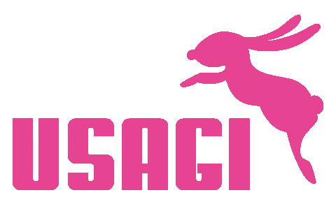

COME SAY HELLO
見学・アクセス。
場所のことも、見学で話したいことも。まずはこちらから。

01
VISIT USAGI
見学で、毎日の雰囲気を知ろう。
写真や文章で伝わることに加えて、部屋の広さ、子どもたちの過ごし方、大人との距離感など、実際に見て分かることもあります。
見学を希望する場合は、既存サイトの連絡先から施設へ日程や受け付け方法を確認してください。このページでは、予約を受け付けていません。
既存サイトを確認するACCESS / 元サイト掲載情報
うさぎ学童へのアクセス。
USAGI GAKUDO
うさぎ学童保育所
〒558-0041
大阪市住吉区南住吉2-23-17
森田マンション1F（三稜中学よこ）
元サイト掲載の電話番号
06-6693-0579
所在地・連絡先の最新状況は既存サイトでご確認ください。
訪問前にご確認ください
このデモでは、駐車場・駐輪場・入口・最寄り駅からの所要時間は確認できていません。訪問前に、来所方法と見学の日時を施設へご確認ください。
Google マップで住所を見る ↗外部サイトを開きます。地図は自動で読み込みません。